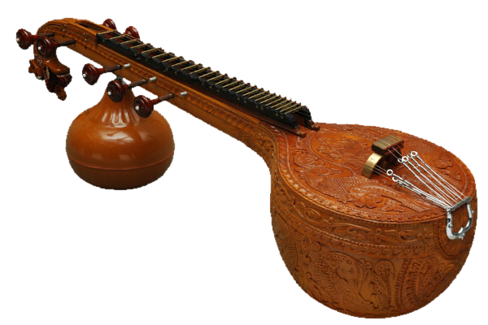

Musical instruments
Vaadhya Rangaa
Explore the instruments that shape India’s musical identity. Each instrument carries a unique sound, history and cultural significance.

The sound of tradition
Veena
With a resonant voice and sacred aura, the veena is central to classical Indian music traditions.
Sitar
A rich melodic instrument celebrated for its tonal complexity and expressive versatility.
Tabla
Rhythm, precision and emotion converge in one of the most iconic instruments of Indian music.
Instrument heritage
- Mridangam
- Bansuri
- Shehnai
- Traditional percussion instruments
Live experiences
Through demonstrations, showcases and workshops, we help audiences understand the depth and craftsmanship behind each instrument.
View instrument events